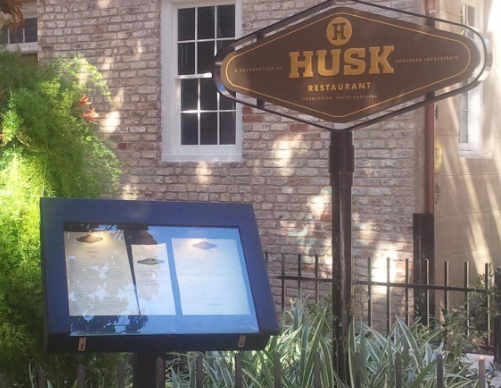
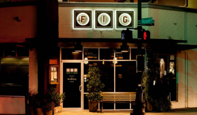
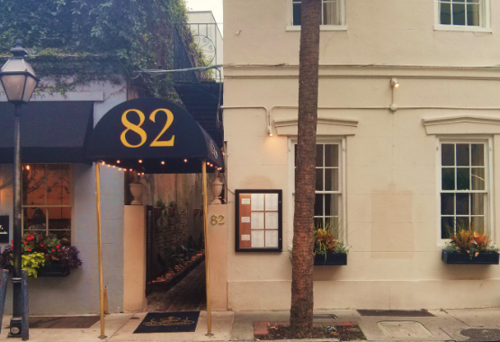

Husk
A modern Southern favorite with a menu that celebrates regional ingredients and seasonal flavors.
- Best for: a special dinner
- Vibe: polished, warm, iconic
- Tip: check the daily menu before you go
Charleston is a treasure worth tasting—one plate, one story, and one neighborhood at a time. This is my homegrown guide to iconic restaurants, cozy recipes, and the little details that make the Lowcountry shine.
I focus on restaurants first—what to order, what the vibe feels like, and the “go back again” spots. You’ll also find book notes, easy recipes inspired by local flavors, and a running list of Charleston sites worth a visit.
A starting point for your must-try list.

A modern Southern favorite with a menu that celebrates regional ingredients and seasonal flavors.

Known for clean, confident cooking and a menu that makes simple ingredients feel elevated.

A Charleston staple with courtyard charm—perfect when you want that “historic downtown” dining feel.

I’m a homegrown Charleston local who loves chasing great meals, testing recipes that actually work, and keeping life balanced with fitness. Charleston Treasures is where I share what I’m eating, what I’m cooking at home, and the spots I recommend when friends ask, “Where should we go?”
You’ll see plenty of restaurant notes (including what to order), simple Lowcountry-inspired recipes, and the occasional book pick that pairs well with a quiet morning coffee. A side note, my favorite coffee shop is Sweet Palm Coffee. If you’re building a weekend plan or just looking for your next favorite bite, you’re in the right place.